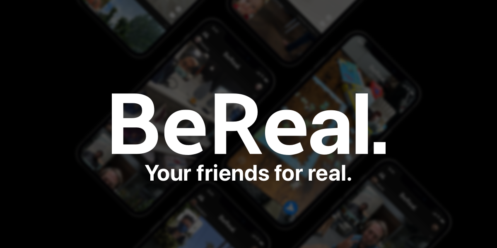
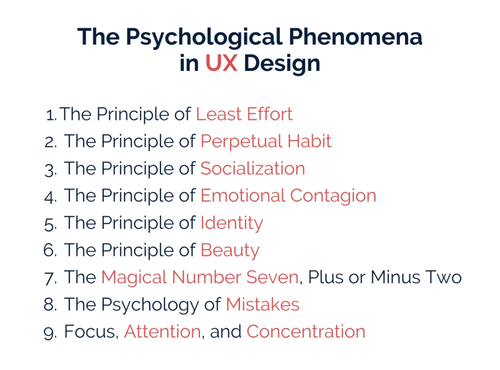
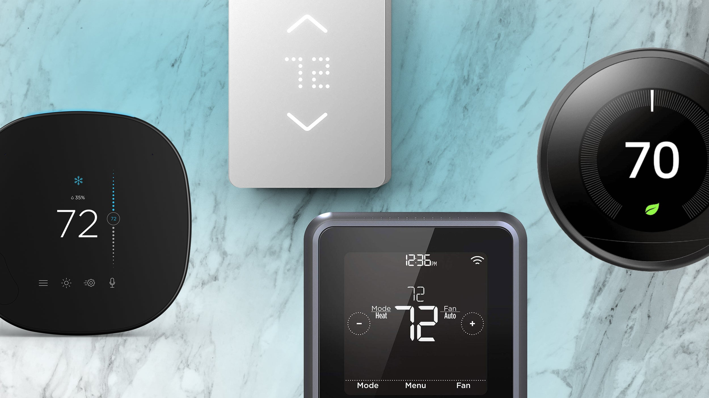

About UCD
User experience (UX) refers to how people interact with a product or service. It's all about creating experiences that are intuitive, efficient, and enjoyable for users. UX designers work to understand user needs and behaviors, and then use that knowledge to create products and services that meet those needs.
One of the key methodologies used in UX design is user-centered design (UCD). UCD is an iterative process that involves understanding user needs, prototyping solutions, and testing those solutions with users to ensure they meet their needs. The goal of UCD is to create products and services that are easy to use, useful, and satisfying for users.
Research app
I used exploratory research methods with a curious because I was trying to uncover hidden information and critical attitude because I there was analytical thinking and i had to evaluate the information, verifying my findings through dialogue with peers and effective communication with stakeholders. This approach allowed me to gain significant personal insights and achieve a successful outcome for my research project.
1. What method did you use and why? I suggested two possible research methods for gathering information on BeReal's target group: survey and analytics. The choice of method would depend on the specific research questions and objectives, as well as the available resources and timeline. A survey would be a more direct and personalized way of gathering feedback from the target group, while analytics would provide a more quantitative and objective overview of the user behavior.
2. Why was this the best one at the time? Since we have many colleagues at the oil, we could easily ask them. Both survey and analytics have their own advantages and disadvantages, and the choice would depend on the specific needs of the research.
3. What was the result from that research? As the research was actually a survey, we had data about age, gender, some problems that users don't like, and some solutions, etc.
4. Did you get research questions answered, or did you get more questions? Based on the research methods suggested, it is possible that some research questions would be answered, while others may arise. For example, a survey may provide insights into the target group's needs and preferences but may also reveal new questions or concerns that were not previously considered.
5. What design thinking phase are you in? The focus is on gathering insights and empathy for the target users. The research methods suggested would be part of the "discover" stage, where the focus is on understanding the target users' needs, behaviors, and preferences.
Through the research , I learned how to uncover hidden information provided online, evaluate it critically, gain personal insights. Also devide the task with my group and effectivly communicate with them.
-

Demo
Principles of design
My research was a success thanks to the online resources, as well as my use of effective communication and the Principles of Design. By applying online research methods and the DOT framework, I found examples to show the different principles. I also incorporated real-life examples such as the Principle of Least Effort, Perpetual Habit, Socialization, Emotional Contagion, Identity, Beauty, and Mistake, resulting in a comprehensive and impressive research document.
The method I used was an online research based on the PDF and some other online resources. I chose this method because it provides a convenient and accessible way to gather information about the principles of UX design psychology. The online research was likely the best method available at the time, as it allowed me to gather a large amount of information in a relatively short period of time. It also provided me with access to a range of sources, such as articles, case studies, and videos, which helped me understand the principles of UX design psychology and how they are applied in practice.
The result of my research is to understand the principles of UX design psychology and how they can be applied to improve user experience. I have found real-life examples that illustrate how these principles work in practice, which can help me see how they can be applied in my own work. In terms of research questions, the research has answered some questions about the principles of UX design psychology, but it has also raised new questions that I wanted to explore further. For example, I have found that a certain principle is particularly effective in improving user experience.
Finally, in terms of design thinking phases, I was in the research phase. This is the phase where I gather information about the problem I'm trying to solve and the users I'm designing for. By conducting online research and gathering real-life examples, I'm building a deeper understanding of the principles of UX design psychology and how they can be applied to improve user experience.
-  Demo
Interview preparation
Our team demonstrated research skills by using exploratory research methods and applying the CMD methods to prepare suitable questions for our client. The communication was effective and tailored to our stakeholders, keeping them informed about the progress and motivations. By presenting the professional identity in a well-designed document that shows the agreements with the client, we show our commitment to becoming skilled media designers.
We used an interview method to gather information about our client's needs and preferences for her website. An interview is a research method that involves asking open-ended questions to elicit detailed responses from participants. This method was likely appropriate in this case because it allowed us to gather detailed information about her needs and preferences, as well as her opinions on various design elements.
The result of our research is a clearer understanding of our client's needs and preferences for her website. We have gathered information about the products, the target audience, and the desired design principles for the website. This information can be used to develop a design concept that meets her needs and preferences.
We have answered some of our research questions, such as the target audience and the desired design principles. However, we have also generated more questions, such as how to incorporate the "story" aspect of the website and how to present the products in a visually appealing way.
During the Empathize phase, we gathered information about our client's needs and preferences through the interview method. During the Define phase, we used this information to clarify the design challenge and identify design criteria, such as the desired design principles and target audience.
User story: individual
My user stories for thermostats in the Netherlands were well-formed and effective due to my use of research methods and a curiousity to find solution on that problem. I used the CMD methods to gain familiarity with the situation and acquire new insights. Additionally, I communicated effectively with the users.
Based on the user stories I created for the thermostat software, I primarily used user research methods such as internet research and primary research survey. These methods allowed me to gather insights and understand user needs related to temperature regulation in homes with a thermostat in the main floor/room.
The user stories I created can be seen as a way to synthesize and make sense of the research findings, which is a common practice in the design thinking process. By creating user stories, I'm able to distill the research findings into specific user needs and requirements that can guide the design and development of the thermostat software.
During the research process, I had some additional questions or new areas of exploration. It's important to remain open to new insights and feedback from users as you move through the design thinking process. This allows for continuous improvement and refinement of the user stories and the overall design of the thermostat software.
The assignment provided valuable insights into the concept of user stories, guiding me in their creation and highlighting the importance of identifying user needs. It enhanced my understanding of how to effectively uncover and address the needs of users.
-  User stories
User story: group
Our user stories were successful due to the adoption of a research-driven, inquisitive, and analytical mindset. Effective communication and a professional identity further contributed to their quality. By employing research methods and embracing curiosity and critical thinking, we gained valuable insights into Greek toys, enabling the creation of meaningful user stories. Additionally, distributing tasks among team members enhanced efficiency and fostered collaboration throughout the project.
Based on the user stories I created for the project, I primarily used user research methods such as internet research and surveys that we did with the group. These methods allowed me to gather insights and understand user needs related to temperature regulation in homes with a thermostat in the main floor/room.
The user stories I created can be seen as a way to synthesize and make sense of the research findings, which is a common practice in the design thinking process. By creating user stories, I'm able to distill the research findings into specific user needs and requirements, such as understanding the behind-the-scenes of a toy and Ancient Greek toys in general.
The research led me to more questions or new areas of exploration, but that's normal.
Persona
The persona that we created from the surveys was effective because they were grounded in real data and user needs. This approach helps to ensure that the final product or solution is tailored to the target audience, improving user satisfaction and adoption. Dividing tasks among team members also helped to streamline the process and ensure that all aspects of the project were addressed. Our team used exploratory research methods, which were then used to create the personas.
We used a survey method to gather data and create a persona. Surveys are a popular research method that allows us to collect quantitative data from a large group of people quickly and efficiently. Surveys are useful because they allow us to collect data from a diverse group of people, which can help us identify patterns and trends in behavior and attitudes.
The survey method was likely the best one for our research because it allowed us to collect data from a large sample of students quickly and efficiently. Additionally, since our research focused on online shopping and Greek toys, it is likely that the survey method was the most appropriate because it allowed us to gather data from different populations.
The result of our research was the creation of a persona that represented the responses of the survey participants. This persona provided us with valuable insights into the behavior, attitudes, and preferences of our target audience. Additionally, the persona has helped us identify areas where we could improve our online website and better meet the needs of our target audience.
Our research answered some of our research questions, such as how much time people are willing to wait for a product and what their expectations are. However, the research also raised more questions that we will need to address in future research. This is why we have planned interviews to further explore and gather insights.
During this phase, we gather insights and information about our target audience to develop a deeper understanding of their needs, motivations, and goals. The creation of a persona based on survey data is a common technique used during the Empathize phase of the design thinking process.
Research about
The success of my research can be attributed to my inquisitive and evaluative mindset, along with the utilization of effective CMD methods. By employing exploratory research techniques and following the DOT framework, I obtained valuable personal insights.
This research explores how the Wizard of Oz CMD method can be applied in user interface design and identifies successful implementations. The methodology involved studying the principles of the Wizard of Oz CMD method and user interface design, researching case studies, and conducting expert interviews.
The results showed that the Wizard of Oz CMD method can lead to early identification of usability issues, more accurate user feedback, and a more efficient design process. Examples of successful implementation include the development of Apple's Siri and the H&M chatbot.
The necessary requirements for conducting the Wizard of Oz CMD method include prior knowledge, a computer, design software, human actors, a script, a test environment, recording equipment, and data analysis tools.
Information architecture
The assignment was to manually search and explore to compare the user experience and navigation on different e-commerce websites. By manually navigating through the websites, the researcher could evaluate the ease of finding the desired products and assess the organization and clarity of the website's layout.
The result of the research was a comparison of four different e-commerce websites (eBay, Amazon, Cool blue, Alibaba, and AliExpress) in terms of how the products (electric toothbrushes and coffee tables/mirrors) were found. I noted the ease or difficulty in finding the desired products and shared observations about the organization and options available on each website.
The primary aim was to evaluate the ease of finding specific products on different e-commerce websites.
In terms of the design thinking phase, this research can be considered as "Research" phase. It involved exploring and gathering information about the user experience and navigation on different e-commerce websites.
QR code
In the assignment regarding QR codes and user preferences, we employed the method of conducting interviews with users. We chose this method because interviews allow for direct interaction and in-depth understanding of user needs, preferences, and expectations. By engaging in conversations, we aimed to gather firsthand information and insights that would guide the design and implementation of the QR code system in the website.
At the time, interviews were considered the best method because they provide an opportunity to ask targeted questions and actively listen to users' feedback. This approach allows us to validate assumptions, uncover unforeseen challenges, and gain a deeper understanding of the user's perspective. By involving potential users in the research process, we aimed to ensure that the QR code system would be well-received and effectively meet their needs.
QR code part 2
I have developed a paper prototype of a toy that includes a QR code on its back. I conducted user testing by having real users interact with the prototype and provide feedback. The purpose of the QR code is to enable users to easily access more information about the toy. When the QR code is scanned, it redirects users to a website where they can find detailed information about the toy, including comments and reviews from other customers.
Interviews were considered the best approach as they provided an opportunity to ask specific questions and actively listen to users' feedback on the prototype. This approach helped us validate assumptions, identify unforeseen challenges, and gain a deeper understanding of the user's perspective. By involving potential users in the research process, our goal was to ensure that the QR code system would be well-received and effectively meet their needs.